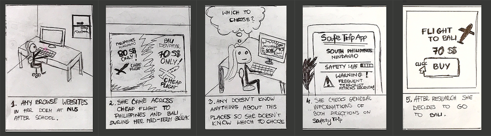
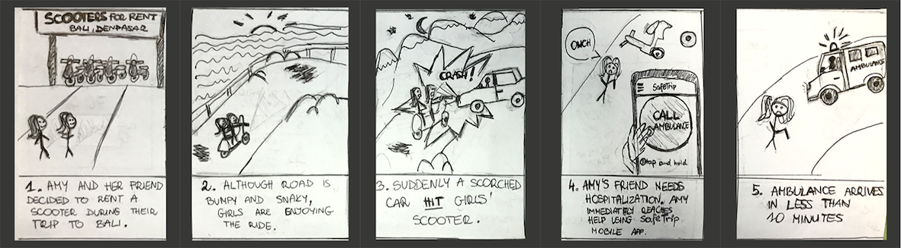
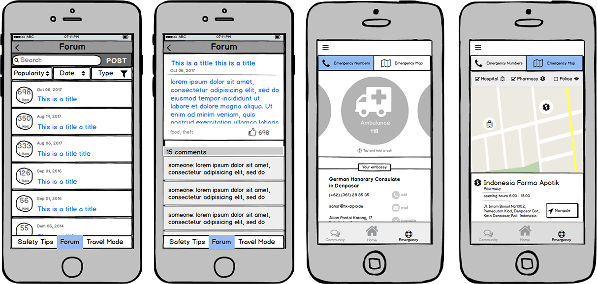
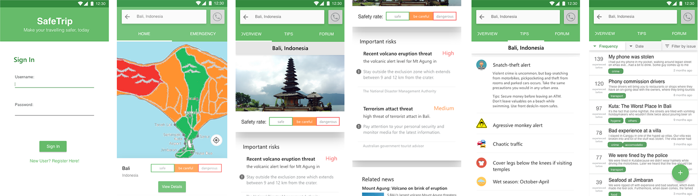
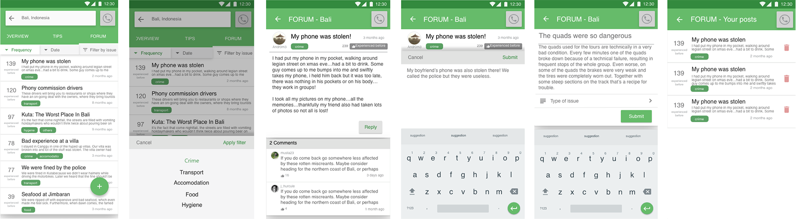
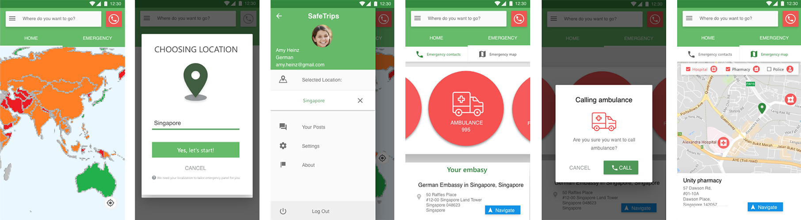

Safetrip Mobile App
3 months
Interaction Designer
Mobile App Design
Empathize
User Study
Our initial target users are backpackers, traveling either alone or in a group. We did interviews with over 10 backpackers to analyse the user behaviours, problems, needs, current solutions, and their expected solutions.

After the interviews, we drew an Empathy Map to analyse the results.
Problems
Currently users search information of their destinations through Google, on embassy websites and tourist websites / forums. However, they find it troublesome to search through all the websites. It is even harder to sift out useful information as information online can be outdated or inaccurate.
User needs
- To know the general safety of their surroundings.
- To know some recommended reactions or where to get help under their own specific situations.
Define
Personas
Based on our user study results, we confirmed that the group most concerned about safety is female. We decided to focus on young females travelling either alone or with their female friends on the self-organized backpacking trips.
Problems
Based on our previous user study and the definition of our personas, we concluded that our users would have the following problems/needs:
- Lack of integrated results - information scattered in different websites
- Lack of information about real experiences from others - users need to ask around or browse through a few blogs, forums
- No effective filtering of results
Storyboards
Amy does research for her trip
Amy has an emergency
Ideate
Solutions
- General safety report: aggregating crucial safety information
- News Board: following latest incidents happening in the regions
- Safety Tips: gathering useful advice on dos and don'ts
- Emergency map: providing quick views to closest institutions needed in case of emergency (e.g. Pharmacy, Hospital, Police station)
prototype
Low-fidelity Prototype

test 1
Usability Test for Low-fidelity Prototype
Since the prototype was done through parallel prototyping, the usability test was designed and conducted by the individuals in the team, with our own prototypes. Overall, we conducted 8 tests with two by each team member due to time constraint. All the test results contributed to the improvement of each separate part of our prototypes, as well as our discussion for the final prototype in the next step.
Results
- Safety rating should be obvious enough for the users- Using icons only can be confusing
- Although the “travel mode” confuses users at the beginning, they find it very useful after knowing how it works
- Users would “agree with” other’s past experiences or “find it helpful” but won’t “like” it
prototype
High-fidelity Prototype
Safety Research
Community
Emergency handling
test 2
Usability Test for High-fidelity Prototype
We prepared several tasks for users to imitate the real use cases of the app. We also prepared printouts to both guide the users and facilitate result recording of the testers.